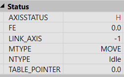

Axis Parameter
FH_IN
This parameter specifies the input number to be used as the feed-hold input.
When the feed-hold input is active, motion on the specified axis has its speed overridden to the feed-hold speed ( FHSPEED ) without cancelling the move in progress. The change in speed uses ACCEL , DECEL and JERK . When the input is reset, any move in progress when the input was set will revert to its programmed speed.
The default setting of FHSPEED is zero, which will cause motion to pause on that axis
Moves that are not speed controlled, such as CONNECT , CAMBOX , MOVELINK , are not affected.
The input used for FHOLD_IN is active low.
|
-1 |
disable the input as feed-hold (default) |
|
0.. IOSIZE -1 |
input to use as feed-hold |
Any type of input can be used, built in, Trio CAN I/O, CANopen or virtual.
Configure input 32 (virtual) as the feed-hold input for axis 0, and make sure FHSPEED is 0 so that motion will be paused when the feed-hold input (inverted input) is activated.
INVERT_IN
(
32
,
1
)
FHOLD_IN =
32
FHSPEED =
0
WAIT
UNTIL
IN
(
32
) =
OFF
BASE
(
0
)
ATYPE =
0
SPEED =
10000
ACCEL =
1000000
DECEL = ACCEL
MOVE
(
999999
)

Axis status will be “H” indicating in feed-hold mode.